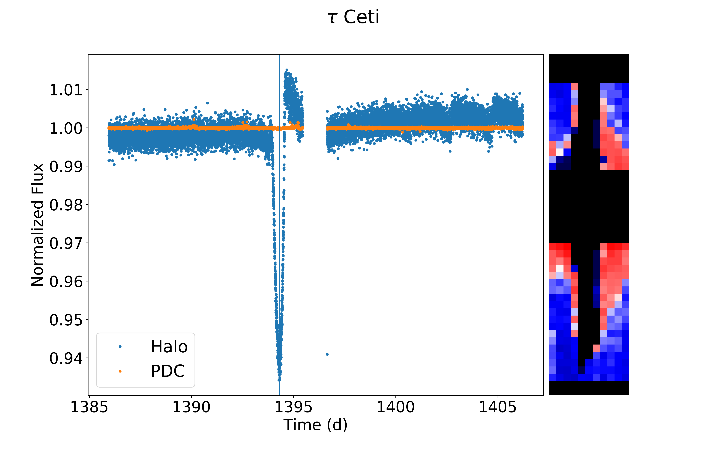
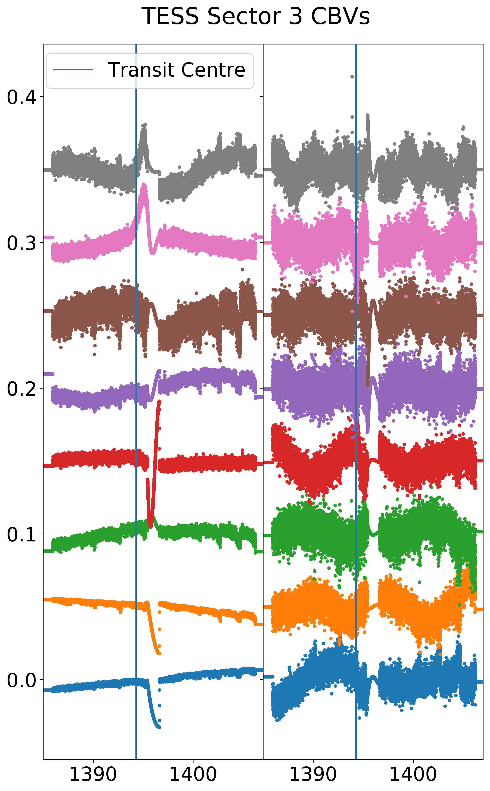
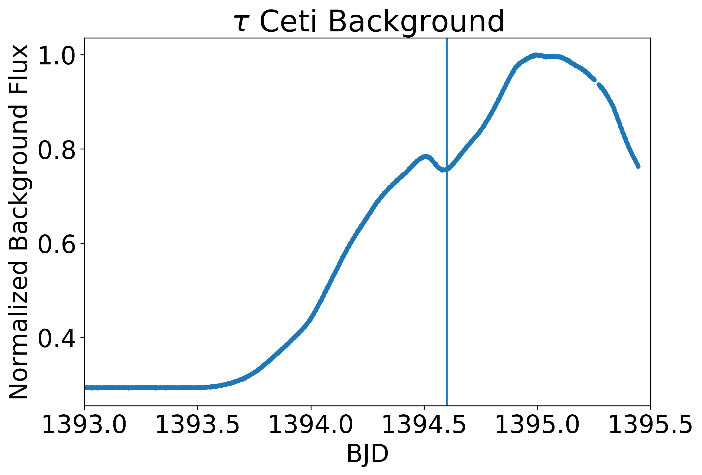
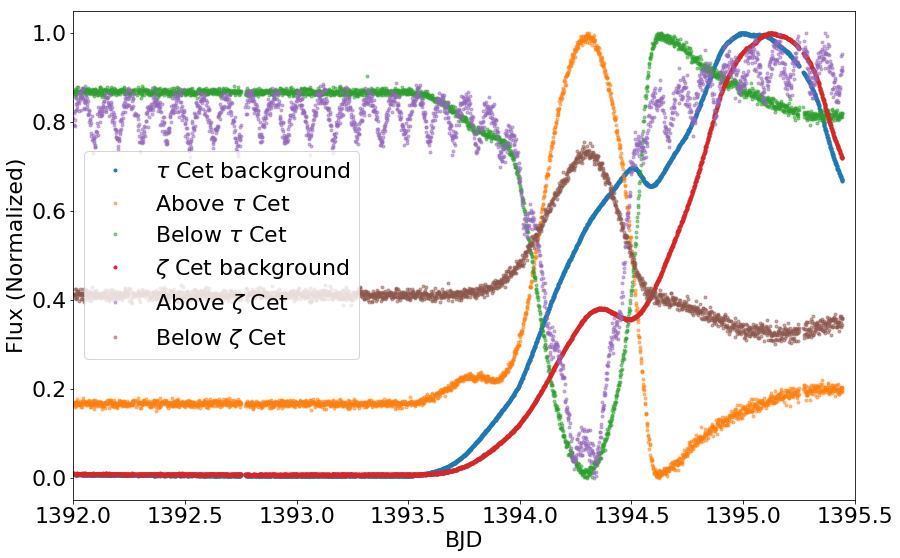

Notes on tau Ceti
Outside of our solar system, the nearest solar-like stars are only a few light-years away, the two bright components of the binary system α Centauri AB (orbited by a third component Proxima Centauri, a dim red dwarf). But to find a star with no companion, you have to look a little further away to tau Ceti, a G8 dwarf (which means it is a little less massive and cooler than the G2 Sun) which is the second-closest star system visible to the naked eye at a distance of only about 12 light-years.
Such a close system is one of the first targets for bold proposals for interstellar travel and contact: closest to my heart, in Ursula Le Guin's The Dispossessed, tau Ceti is home to the twin habitable worlds of Urras and Anarres; the former capitalist, the latter the home for anarchist exiles. But to astronomers since then it has become increasingly exciting as a host for real exoplanets: from radial velocity observations (measuring the red and blue shift in the star's spectrum as it is tugged back and forth by planets) it has been suspected since 2012 that it hosts a number of exoplanets, with orbital periods of a few weeks to a few years. If one of these transits, it would be a huge discovery - both by independently confirming the existence of these planets, but also because it would open up an unprecedented opportunity to study their atmospheres as they are illuminated by the star behind during transit. tau Ceti is ten times brighter than the next-brightest transiting planet host star and the extra light would be a significant boon to photon-starved spectrographs.
When the data from the Transiting Exoplanet Survey Satellite (TESS) covering tau Ceti came out two weeks ago, I received an email from Prof. Suzanne Aigrain at Oxford, my former DPhil supervisor, saying that the Planet Hunters team had noticed evidence of a transit in the light curve of tau Ceti and asking if I could check this - without knowing when the transit they found occurred, so that I had to replicate the result blind! One of the difficulties is that tau Ceti is very bright, a third magnitude star in a telescope that saturates (overexposes - just like in other cameras) on stars three magnitudes (fifteen times) fainter. In my DPhil, I had worked with Dr Tim White (ANU) to develop the method of 'halo photometry' (the code halophot) to deal with this problem for similar data obtained by the previous mission Kepler, which we used to look at the Seven Sisters and the planet-hosting red giant Aldebaran. So I used this code to look at tau Ceti. Running halophot, excluding the saturated centre of the image but keeping basically the rest of the field except for background stars, it up-weights something that looks rather like the deep TESS point-spread function (PSF, or the pattern of light generated by a star on the detector after the effects of the lenses and so forth). And it produced a huge signal that looked just like a transit (light curve on the left - standard 'PDC' pipeline in orange, new halo light curve in blue, halo map on the right):

When I told Suzanne, she confirmed this was exactly when they thought the transit was. So we were on: time to check if it's real!
First thing to check: halophot doesn't do the pathological thing you sometimes get of e.g. focusing exclusively on a few 'hot' or partially saturated pixels or on weird non-contiguous blocks. The light curve you get from this has a deep and clean transit, which is maybe a bit long and deep, but looks ok. What is immediately suspicious, though, is that it occurs just before perigee: TESS has an eccentric orbit in a 2:1 resonance with the moon, which means that twice a month it approaches very close to the Earth briefly (perigee) and then swings back out again to spend most of its orbit far away. When it is at perigee it is subject to a lot of reflected light from the Earth - Earthshine! So to me it immediately raised alarm bells that this signal happened right when the telescope was most vulnerable to contamination from background light.
You can break down the general behaviour of all the stars on the same detector into a few common modes of variation related to the background light, pointing, temperature and so forth, producing a set of 'cotrending basis vectors' (CBVs) that summarize the overall kinds of systematic error in stars across the chip. If you compare the dip here to the CBVs for the whole sector of data, the only ones it really looks like are on detector 1-2, i.e. the chip on which tau Ceti itself lies. This is maybe a mild mark in favour of there really being a planet: I can easily imagine such a bright star dominating a component of the CBVs and you don't see this effect in other detectors.

To figure out what is going on with the Earthshine, we produce a 'background' light curve for tau Ceti using only pixels far away from where the star is contributing much light. LEt's plot this with a vertical line to note the midpoint of the 'transit' we found earlier:

Uh-oh! The 'transit' signal is clearly seen in the background light. This isn't an absolute killer - tau Ceti is very bright, and it isn't implausible that its light could have directly contaminated the background or done so via some electronic chip effect ('cross-talk'). But it is pretty alarming.
Let's look at some less highly processed data. What we have been looking at so far has been a 'target pixel file' (TPF) produced with a frame every 2 minutes and a lot of sophisticated calibration. Insted let's use the TESSCut tool to grab part of the Full Frame Image (FFI) data, which has 30 minute frames and a lot less processing but of a much wider field. If you use lightkurve.interact() and look at the individual pixel time series in the FFI TPF, they all show this dip. But in the pipeline TPF this is different: above the mid-axis of the star, they go up during 'transit' and below they go down. You can actually see this at a global level if you use the slider and the right scalings: it seems that as a whole the background flux shifts upward on the detector for a few hours and then shifts back down. So something funky has happened to the spatially-varying background during processing.
So let's look at another very bright star in the field: the giant star zeta Ceti. Do we see the same problem? Unfortunately, overall we get rather poor halo results (but surprisingly very good pipeline results) on zeta Ceti, which shows the same background dip - but as Tim White pointed out, at a slightly different time! Here's his figure showing this:

There's a lot going on here. 'Above' and 'below' tau Ceti or zeta Ceti shouldn't mean anything really - we could just as easily have picked different pixels - but they get background calibrations pushing them up in one direction and down in the other. Meanwhile the overall dips in the background happen at slightly different times for both stars - which I think fairly conclusively tells us they are something to do with TESS and not a planet around tau Ceti!
So to look at the spatial detail in the background, I downloaded all TPFs on the same camera as tau Ceti, extracted their background light curves, and made a video of their background flux over time. Each point below is coloured by the logarithm of the background flux, clipped at the top and bottom to bring out the features best. tau Ceti is a blue star bang in the middle and zeta Ceti orange to the top right, and the 'transit' occurs at day 1394.6 or about 15 seconds into the video.
As you can probably just make out, there is a lot of spatial structure there, mostly in the lower left. Just before the transit, there is a spur through the middle towards the top right that lights up a little, and then it switches back to the lower left, and then everything gets brighter overall towards perigee. This spatial structure is apparent after the TESS pipeline processing: digging it out with the lower time resolution from the huge FFI images would be much harder, but is perhaps a worthwhile next step.
Regrettably we can conclude that we may have been 'dispossessed' of this potentially very exciting planet candidate. But this is how science is: something that is too good to be true very often turns out that way, but it doesn't make it any less worth investigating. In digging through the data on tau Ceti we were forced to fix bugs in our pipelines and grapple with unfamiliar systematics in TESS that we didn't see in Kepler. Personally, I am concerned that systematics which affect so many pixels in common over such a wide field are going to pose a serious problem to the approach we had been taking to bright stars in K2, and playing with the tau Ceti data has been a valuable learning experience. While we haven't yet detected her planet's transits, we should keep in mind the maxim of Le Guin's Anarresti scientist Takver:
There was process: process was all. You could go in a promising direction or you could go wrong, but you did not set out with the expectation of ever stopping anywhere.